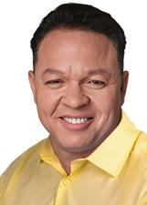

Mato Grosso
Quem ocupa os cargos hoje e quem assume em 2027.
Resultado provisórioTSE, capturado em 29/10/2026
Poder Executivo
Administra o governo e executa as leis: saúde, educação, segurança, estradas e o orçamento.
Governador
Mauro MendesUNIÃO · 1.114.549 votos · eleito em 2022★ Novato›Quem comanda cada cidade do estado.
Poder Legislativo
Cria as leis, aprova o orçamento e fiscaliza o Executivo.
Senadores (2)
 Jayme CamposDEM · 490.699 votos · eleito em 2018↺ Retorno›Wellington FagundesPL · 825.229 votos · eleito em 2022★ Novato no Senado›
Jayme CamposDEM · 490.699 votos · eleito em 2018↺ Retorno›Wellington FagundesPL · 825.229 votos · eleito em 2022★ Novato no Senado›
Deputados federais (6)
Bancada federal por partido
6 cadeiras de Mato Grosso
- MDB233%
- PL233%
- UNIÃO233%
Do partido com mais cadeiras para o com menos, não por posição política. Cada partido usa a sua cor de marca.
Deputados federais (6): buscar e ver a lista
Deputados estaduais e distritais (24)
Assembleia por partido
24 cadeiras de Mato Grosso
- MDB417%
- PSB417%
- UNIÃO417%
- PL28%
- PSD28%
- PT28%
- REPUBLICANOS28%
- CIDADANIA14%
- PP14%
- PSDB14%
- PTB14%
Do partido com mais cadeiras para o com menos, não por posição política. Cada partido usa a sua cor de marca; cinza é partido sem cor registrada na fonte.
Deputados estaduais e distritais (24): buscar e ver a lista

Claudio FerreiraPTB · 26.234 votos · eleito em 2022★ Novato›DR. EugênioPSB · 25.378 votos✓ Reeleito›DR. JoãoMDB · 24.957 votos✓ Reeleito›Diego GuimarãesREPUBLICANOS · 25.907 votos★ Novato›Dilmar Dal BoscoUNIÃO · 42.156 votos✓ Reeleito›Elizeu NascimentoPL · 22.415 votos · eleito em 2022✓ Reeleito›Eng. Sebastião Machado RezendeUNIÃO · 36.919 votos✓ Reeleito›FabinhoPSB · 29.709 votos★ Novato›FaissalCIDADANIA · 30.240 votos✓ Reeleito›Gilberto CattaniPL · 44.705 votos★ Novato›Janaína RivaMDB · 82.124 votos · eleito em 2022✓ Reeleito›Juca do Guaraná FilhoMDB · 20.723 votos · eleito em 2022★ Novato›Júlio CamposUNIÃO · 33.800 votos · eleito em 2022★ Novato›Lúdio CabralPT · 47.533 votos✓ Reeleito›Max RussiPSB · 70.328 votos✓ Reeleito›NininhoPSD · 50.875 votos✓ Reeleito›Paulo AraujoPP · 24.551 votos · eleito em 2022✓ Reeleito›Thiago SilvaMDB · 30.506 votos✓ Reeleito›Valdir BarrancoPT · 29.359 votos✓ Reeleito›Valmir MorettoREPUBLICANOS · 25.207 votos✓ Reeleito›Wilson SantosPSD · 23.446 votos✓ Reeleito›Os eleitos de cada cidade do estado.
Poder Judiciário
Julga os conflitos e garante que as leis sigam a Constituição.
Os desembargadores do Tribunal de Justiça e do Tribunal Regional Eleitoral. Não são eleitos.
Poder Executivo
Administra o governo e executa as leis: saúde, educação, segurança, estradas e o orçamento.
Governador
Otaviano PivettaREPUBLICANOS · 1.128.099 votos★ Novato›Quem comanda cada cidade do estado.
Poder Legislativo
Cria as leis, aprova o orçamento e fiscaliza o Executivo.
Senadores (3)
Mauro MendesUNIÃO · 1.187.352 votos★ Novato no Senado›Wellington FagundesPL · 825.229 votos · eleito em 2022★ Novato no Senado›Zé MedeirosPL · 977.777 votos★ Novato no Senado›Deputados federais (8)
Bancada federal por partido
8 cadeiras de Mato Grosso
- PL338%
- UNIÃO225%
- PODE112%
- PT112%
- REPUBLICANOS112%
Do partido com mais cadeiras para o com menos, não por posição política. Cada partido usa a sua cor de marca.
Deputados federais (8): buscar e ver a lista
Deputados estaduais e distritais (24)
Assembleia por partido
24 cadeiras de Mato Grosso
- PODE625%
- PL417%
- REPUBLICANOS417%
- MDB312%
- PSDB28%
- PT28%
- UNIÃO28%
- PSD14%
Do partido com mais cadeiras para o com menos, não por posição política. Cada partido usa a sua cor de marca.
Deputados estaduais e distritais (24): buscar e ver a lista
Os eleitos de cada cidade do estado.
Poder Judiciário
Julga os conflitos e garante que as leis sigam a Constituição.
Os desembargadores do Tribunal de Justiça e do Tribunal Regional Eleitoral. Não são eleitos.
Como ler
★ Novato Primeiro mandato nesta casa (Câmara ou Senado).
✓ Reeleito Já estava no cargo e foi eleito de novo.
↺ Retorno Já teve mandato, mas estava fora.
Sem selo Não conseguimos ligar a pessoa a um mandato anterior. Isso não quer dizer que seja novata: simplesmente não afirmamos nada.
Provisório Só é confirmado na diplomação.